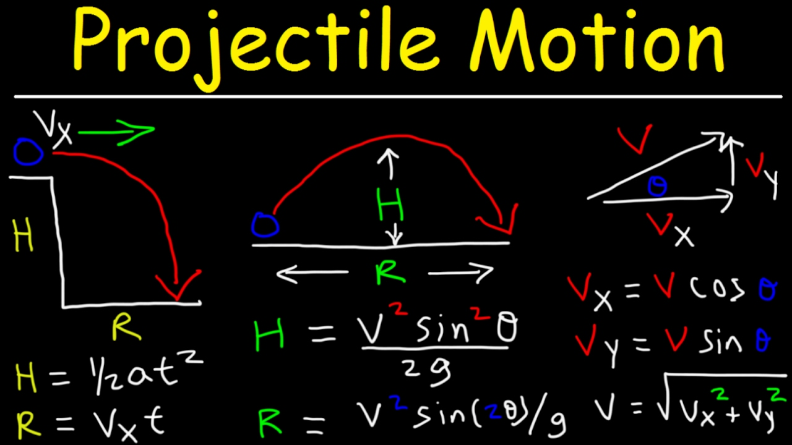
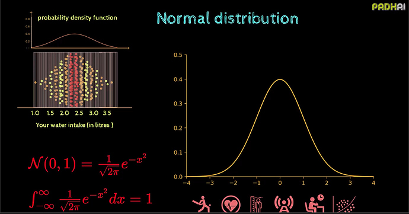
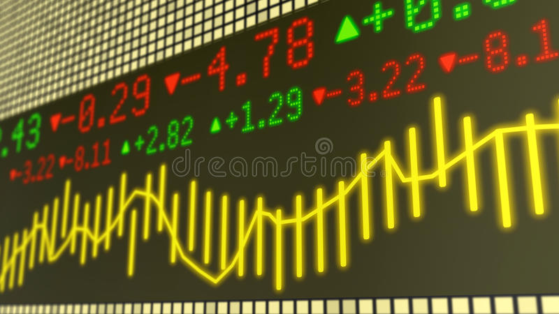
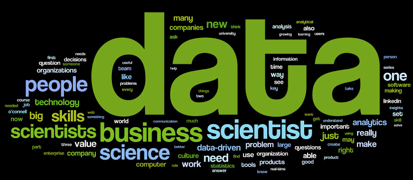

I Love This Bar
The Bar Graph is often the first data visualization people learn-- and with good reason!
Humans are very good at making visual comparisons, the Bar Graph's striking
simpliciy makes for easy understanding, and (most excitedly) Bar Graphs lead to Histograms.
In this project, we learn the data visualization basics by comparing college degrees by salary.
In this project, we learn the data visualization basics by comparing college degrees by salary.

Tiny Bubbles
Bubbles are not only magical, playful and fun-- they also have size, color and location.
These qualities make bubbles perfect for representing data.
In this project, we have fun with bubbles. We create Bubble Charts where the bubble locations, sizes and colors are determined by random numbers that you generate.
In this project, we have fun with bubbles. We create Bubble Charts where the bubble locations, sizes and colors are determined by random numbers that you generate.

Points, Lines & Distances
What's so special about Points, Lines and Distances? It turns out that these simple concepts underlay (all of???) data analysis.
In this project, we study changes in education cost to explore how basic point-plotting leads to one of the most powerful tools in statistics: Linear Regression.
In this project, we study changes in education cost to explore how basic point-plotting leads to one of the most powerful tools in statistics: Linear Regression.

Fun Functions
Functions are more than strange equations-- they often describe the world around us.
In this project, we study particle motion using various functions, and we learn a thing or two about chart animations along the way.
In this project, we study particle motion using various functions, and we learn a thing or two about chart animations along the way.
In or Out?
Data collection is a messy business and the resulting data sets often have bad
elements. Fortunately, there are tools to help us identify these bad items, a.k.a.: Outliers.
In this project, we integate outlier detection models into our data visualization. Furthermore, we add interactivity so that when we delete elements in our viz, the underlying data set and model are updated simultaneously. Voila!
In this project, we integate outlier detection models into our data visualization. Furthermore, we add interactivity so that when we delete elements in our viz, the underlying data set and model are updated simultaneously. Voila!

Is this Normal?
The 'Normal Distribution' is a special function with nice properties.
Its shape is completely determined by two parameters, and it is easy
and interesting to study.
In this project, we will create an interconnected dashboard of Normal distributions created using different parameters. One well designed chart is a wonderful thing-- a Dashboard of interconnected charts is a thing of wonder.
In this project, we will create an interconnected dashboard of Normal distributions created using different parameters. One well designed chart is a wonderful thing-- a Dashboard of interconnected charts is a thing of wonder.

Tick, Tick, Tick...
Simple data sets are good for learning how to crete modern charts.
Now we learn how to integrate real-time databases.
In this project, we will stream real-time stock data through a database and into our data viz. (This is a Wow! moment) We will also apply simple models to look for changes in the stock price.
In this project, we will stream real-time stock data through a database and into our data viz. (This is a Wow! moment) We will also apply simple models to look for changes in the stock price.

I'm Here to Help
Images make up a vast amount of the data collected every day. Facial recognition,
disease detection and plant classification all involve image analysis.
In this final project, we use concepts like distance (with a twist) and outlier detection introduced earlier to detect Sicle Cell Anemia in cells based on changes in their shape.
In this final project, we use concepts like distance (with a twist) and outlier detection introduced earlier to detect Sicle Cell Anemia in cells based on changes in their shape.

You may say I'm a dreamer...
Create an advanced data visualization and modeling project using your Imagination.